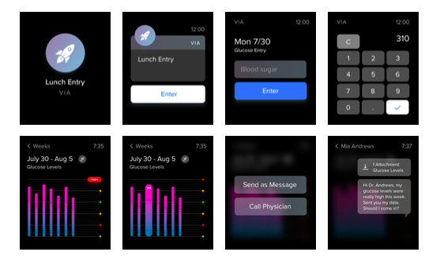

Overview: As patients manage their own health and illnesses, many wonder how to get a copy of their health data to share with thier physicians,
store in their own apps, provide data to support research, link to their genomic data, or have on hand just in case. The end result of this effort should be a concept for a technology solution that enables patients to own and securely share their health data.
Our solution:
We created VIA, a personal and holistic approach to managing health information. It allows for customized health tracking, assessments, and notifications, as well as easy communication of health data with personal physicians.
Marketplace Research: The two major players in the market are Apple Health and Google Fit.

Screens for our Apple Watch prototype